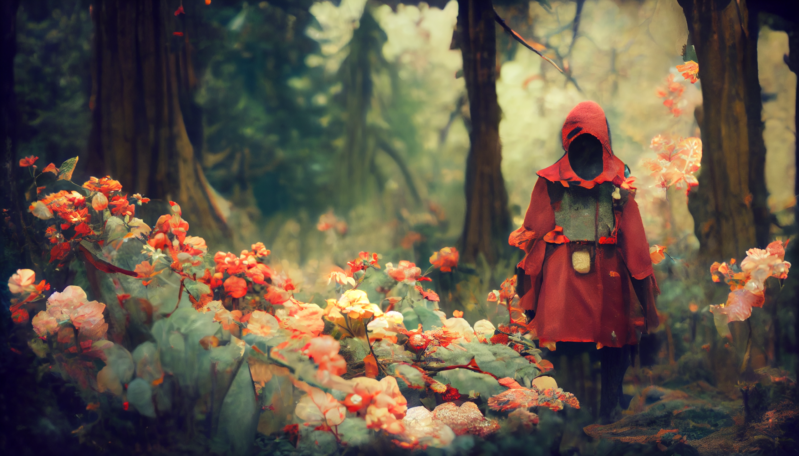

Little Red Riding Hood
> Art done by Midjourney - Prompt: Little Red Riding Hood in the woods



> Art done by Midjourney - Prompt: Little Red Riding Hood in the woods
Thinking about the fairy tale I read as a child, Little Red Riding Hood came into my mind. Entering the prompt:Little Red Riding Hood in the woods.
The face of the little red riding hood is just blank and look a little creepy, but the atmosphere of the images is very nice, which gives a weird contrast and makes the images became very attractive to look at. Because the AI can't produce things specifically if you don't have a clear prompt and wordings. So if I specified the prompt, such as suggesting the facial details, and the environment surrondings. Then, the image being produced will be more specific and will not have a creepy atmosphere.